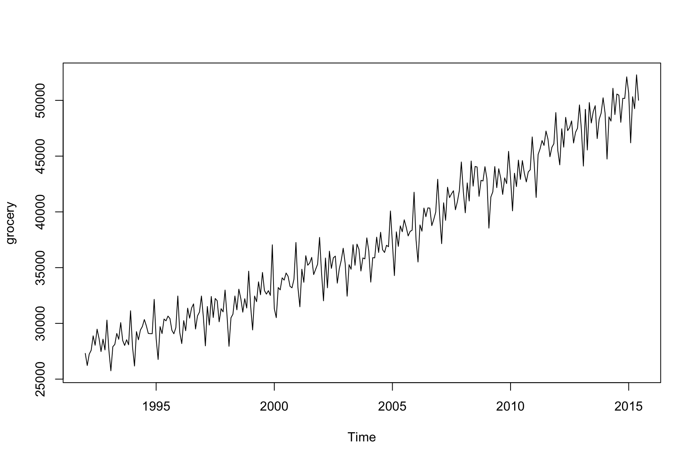

1 Introduction
Attaching package: 'seasonal'The following object is masked from 'package:cynkra.finance.data':
viewYou are reading an early draft of Seasonal Adjustment in R. This chapter is complete enough as an education tool and can be used in a course. It needs additional polishing.
It is part of the course materials intended for Dec 21, 2022.
This book will teach you how to do seasonal adjustment in R using X-13ARIMA-SEATS. The audience will be both R users who want to learn about seasonal adjustment and seasonal adjustment practitioners who are interested in using R. The book will be tailored to the practical applications of seasonal adjustment within R.
Seasonal Adjustment
Many time series exhibit a regular seasonal pattern over the year. US unemployment, for example, is usually higher from January to March and again in June and July. Similarly, retail sales tend to peak during the Christmas season. This seasonal behavior is regular and predictable. The goal of seasonal adjustment is to estimate and remove the seasonal component from a time series.
Why do we want to do this? Seasonal data is usually hard to interpret. For example, if we want to learn from the US unemployment rate if the economy is moving out of a recession during certain months, we want the labor market data to be free from seasonal effects.
X-13ARIMA-SEATS
Fundamentally, seasonal adjustment decomposes a time series into a trend, a seasonal, and an irregular component. Seasonal adjustment is then the act of removing the seasonal estimate from the observed series. There are many ways to perform this decomposition. This book focuses on a particular one, X-13ARIMA-SEATS (X-13, for short), the seasonal adjustment software developed by the United States Census Bureau. X-13 offers an elaborate toolkit to perform seasonal adjustment. The software allows users to control all aspects of the modeling process or alternatively, to use automated methods to make all modeling choices. In the text we will try to present material with this in mind. Throughout we offer suggestions about when built-in automatic method are sufficient (and sometimes even preferred) and when an analyst can get the most ``bang for the buck’’ to control modeling options themselves.
R
This book will teach you how to use X-13 in R through the seasonal package, which offers access to all features of X-13 with a usually much simpler syntax. It should be noted that the seasonal package is not a re-coding of the X-13 software. Instead it is a translation from R to the X-13 software. This translation is done under the hood and practitioners need not concern themselves with this inner working of the package. However, we make this point such that users understand that conceptually anything that can be done in the native X-13ARIMA-SEATS software, either from the command line or HTML version, can be done in the seasonal R package. Also this means if additional clarification or information about seasonal adjustment is desired, the X-13 manual or research papers can be consulted. Any example or methods found via the X-13 documentation can be easily translated to the R seasonal package. In fact, all examples from the X-13 manual can be seen run in the R seasonal package at http://www.seasonal.website/examples.html. The required X-13 binaries are provided by the x13binary package and automatically included in seasonal. The next chapter provides a minimal example to get you started in less than five minutes.
Target audience
We write this book for two primary audiences: The first focus is on current practitioners of seasonal adjustment who are interested in learning how to implement in R. This audience includes researchers from statistical agencies who want to use features of R to evaluate the properties of their seasonal adjustments.
The second focus is on current R users who want to learn seasonal adjustment. We are able to leverage the reader’s knowledge of R to make learning seasonal adjustment easier. We will feature exciting applications outside official statistics, such as the seasonal adjustment of business data.
The book tries to be as practical as possible. It usually starts with a practical problem and shows how to solve it in a cookbook style. Formal derivations are usually avoided. Each chapter ends with a case study that discusses a real-life example of the topic.
History of X-13
In official statistics, seasonal adjustment has a long tradition. The US Census Bureau developed the original X-11 software in the 1960s, Statistics Canada (Dagum 1980) continued the development afterward. The following software packages by the US Census Bureau were called X-12-ARIMA (Findley et al. 1998) and X-13ARIMA-SEATS (or X-13, for short) (Monsell 2007). X-11 is still used as a name for filter-based seasonal adjustment methods within X-13. Meanwhile, TRAMO-SEATS, developed by the Bank of Spain (Caporello, Maravall, and Sánchez 2001), offers an alternative model-based approach to seasonal adjustment.
Dagum, Estela Bee. 1980. The x-11-ARIMA Seasonal Adjustment Method. Statistics Canada, Seasonal Adjustment; Time Series Staff.
Findley, David F, Brian C Monsell, William R Bell, Mark C Otto, and Bor-Chung Chen. 1998. “New Capabilities and Methods of the x-12-ARIMA Seasonal-Adjustment Program.” Journal of Business & Economic Statistics 16 (2): 127–52.
Monsell, B. 2007. “The x-13A-s Seasonal Adjustment Program.” In Proceedings of the 2007 Federal Committee on Statistical Methodology Research Conference. http://www.fcsm.gov/07papers/Monsell.II-B.pdf.
Caporello, Gianluca, Agustin Maravall, and Fernando J Sánchez. 2001. “Program TSW Reference Manual.” 0112. Banco de España Madrid. https://ideas.repec.org/p/bde/wpaper/0112.html.
National Bank of Belgium, Deutsche Bundesbank, Eurostat. 2017. JDemetra+: Econometric Software for Seasonal Adjustment and Other Time Series Methods. Eurostat. https://ec.europa.eu/eurostat/cros/content/download.
In its most recent version, X-13 offers these two seasonal adjustment methods in a single command-line tool written in Fortran. The National Bank of Belgium has created an alternative Java-based implementation called JDemetra+ (National Bank of Belgium, Deutsche Bundesbank, Eurostat 2017), also widely deployed by statistical agencies.
1.1 The seasonalbook package
An R package that supplements “Seasonal Adjustment in R”, and contains all data and examples.
To install:
remotes::install_github("christophsax/seasonalbook")Example series:
Acknowledgements
We are indebted to the United States Census Bureau for X-13ARIMA-SEATS and support for research around the software. Help and support by Brian Monsell are especially acknowledged.
seasonal was originally developed for use at the Swiss State Secretariat of Economic Affairs. It has been dramatically improved thanks to suggestions and support from Matthias Bannert, Freya Beamish, Vidur Dhanda, Alain Galli, Ronald Indergand, Preetha Kalambaden, Stefan Leist, James Livsey, Pinaki Mukherjee, Bruno Parnisari and many others. The related work on the x13binary package facilitated (automated) deployment thanks to the R package system, CRAN, and GitHub for the x13prebuilt repository.